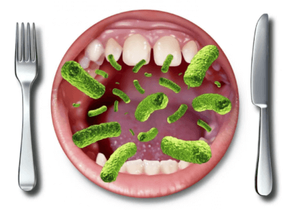
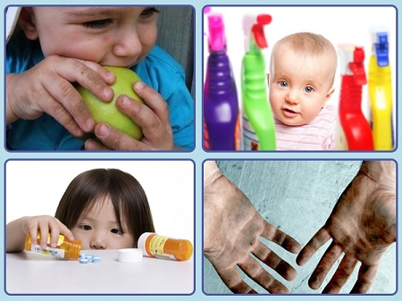
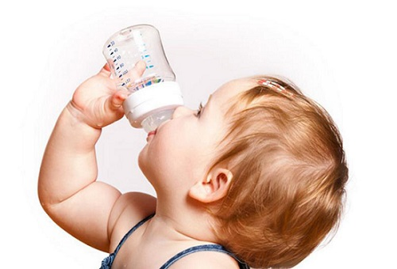
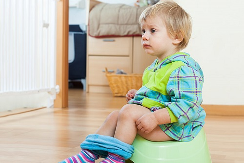
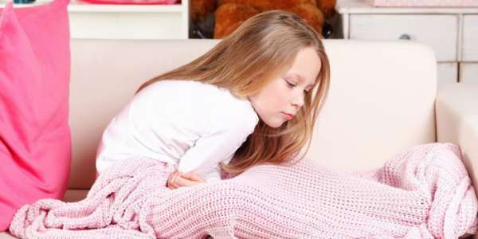

Рвота всегда вызывает обеспокоенность родителей. Но вы можете быть уверены, что она, как правило, в конечном счете безобидна. Большинство детей может рвать много раз в течение нескольких часов, при этом у них не разовьется дегидратация. Ниже мы даем советы, которые помогут вам справиться с рвотой у своего ребенка.
РАСПРОСТРАНЕННЫЕ ПРИЧИНЫ
Вирусная инфекция. Вирусы являются наиболее распространенной причиной рвоты у детей и подростков. Вирусы могут быть разных видов (например, грипп, ротавирус или другие), но при всех заболевание протекает по одинаковой схеме. Ими можно заразиться при контакте с больным человеком. Заболевание начинается, как правило, внезапно, лихорадкой, болями в мышцах, животе и рвотой. Диарея бывает не всегда. Можно лечить рвоту, но для самого заболевания лечения не существует. Надо просто дать ребенку переболеть им.
Пищевое отравление. Бактериальное инфицирование при употреблении испорченной пищи — вторая по распространенности причина. Симптомы схожи с симптомами вирусной инфекции, но при пищевом отравлении, как правило, нет лихорадки и боли в теле, и почти всегда оно сопровождается диареей. Симптомы могут начать проявляться в любой момент: от нескольких часов до целого дня после употребления пищи. Другим признаком, указывающим на то, что это скорее пищевое отравление, а не вирусная инфекция, является то, что рвота, как правило, длится не более 12 часов. Если это так, вы можете попытаться вычислить, какой продукт является виновником. При пищевом отравлении заболевают и другие люди, употреблявшие эту же пищу.
Бактериальные кишечные инфекции. Они встречаются реже, но могут причинять больше беспокойства. Сюда относятся несколько видов бактерий: сальмонелла, шигелла, кампилобактер и кишечная палочка. Их можно подхватить при употреблении инфицированной пищи (как при пищевом отравлении) или через контакт с больным человеком. Симптомы могут быть различными, но обычно это лихорадка, рвота, диарея (иногда с примесью крови) и боли в животе. Некоторые из этих заболеваний можно лечить при помощи антибиотиков.

ОСОБЫЕ ПРИЧИНЫ
Необходимость срочного хирургического вмешательства. Существует несколько проблем с кишечником, которые могут спровоцировать рвоту, например, кишечная непроходимость и аппендицит. Тем не менее в этом случае основным симптомом являются сильные боли в животе, а рвота — вторичным.
Менингит. Если у ребенка рвота в сочетании с лихорадкой, головными болями, ригидностью затылка, чрезмерной раздражительностью или заторможенностью и светобоязнью, его надо немедленно отвезти на осмотр к врачу.
Тяжелое течение инфекции мочевыводящих путей. Если рвота сопровождается болезненным и частым мочеиспусканием, лихорадкой и болью в нижней и средней части спины, это может быть симптомом инфекции мочевыводящих путей. |
Передозировка медикаментов или употребление яда. Если подозреваете, что ваш ребенок мог употребить что-то вредное, немедленно позвоните врачу или в «Скорую помощь».
Черепно-мозговая травма. Рвота может быть признаком внутренней черепно-мозговой травмы.
Мигренеподобная головная боль, или мигрень, сопровождающаяся тошнотой и рвотой. Неожиданная рвота в сочетании с болями в животе и/или головными болями может быть мигренью.
Опухоль головного мозга. Очевидно, это самая редкая причина, но мы просто пытаемся быть педантичными. Рвота, которая постепенно учащается на протяжении нескольких недель, сопровождается головными болями и ухудшением психического состояния, может быть признаком опухоли головного мозга. В этом случае не будет никаких других признаков заболевания желудочно-кишечного тракта, таких как боль в животе или диарея.

ОПРЕДЕЛЕНИЕ ПРИЧИНЫ
Ознакомление со списком различных причин поможет вам определить, что происходит с вашим ребенком. В целом рвота в сочетании с лихорадкой, болью в животе и диареей будет скорее означать заболевание желудочно-кишечного тракта. Если в стуле нет крови, тогда, скорее всего, это вирусная инфекция. Кровь в стуле может означать инфекционное заболевание, которое должен оценить ваш врач. Если у вашего ребенка рвота, боль и диарея без лихорадки, то это, вероятно, пищевое отравление. Особые причины, перечисленные выше, довольно легко диагностируются.
На самом деле нет необходимости определять точную причину рвоты в первые дни заболевания. Самое главное — убедиться в отсутствии признаков одного из серьезных заболеваний, перечисленных выше. |
ПОДДЕРЖАНИЕ ВОДНОГО БАЛАНСА РЕБЕНКА
Не паникуйте. Дети обычно могут переносить до 12 часов рвоты без дополнительного приема жидкости, прежде чем начнется обезвоживание. Рвота, как правило, протекает в несколько стадий. Поддерживающий уход будет различным в зависимости от того, какая стадия рвоты у ребенка.
Первая стадия: повторяющаяся рвота каждые 5—30 минут. Эта первая стадия самая пугающая для родителей и детей. Вы чувствуете себя такими беспомощными, поскольку единственное, что вы можете сделать, — позвонить врачу. Нет никаких безрецептурных препаратов, которые вы можете попробовать дать. Просто следите, чтобы ребенок был в вертикальном положении, держите ему ведерко, пока его рвет, и вытирайте ему лицо, когда приступ рвоты заканчивается.В промежутках между приступами рвоты дайте ребенку покой. Эта первая стадия может длиться от 1 до 4 часов. Поскольку за это время обезвоживание не успевает развиться, даже не стоит пытаться давать ребенку жидкость; она, как правило, все равно выходит вместе со рвотой. Если ваш ребенок просит попить или покормить его грудью, будет нормально, если вы сделаете это, даже несмотря на то что выпитое, скорее всего, не задержится у него в организме.

Вторая стадия: рвота замедляется до 1 раза каждые 1—2 часа. Когда ребенка рвет реже, родители и он могут немного отдохнуть между приступами. В это время можно предложить ребенку немного питья. Но будьте осторожны: слишком большое количество жидкости, выпитое слишком быстро, может сразу же выйти обратно. 1—2 глотка каждые 5—10 минут будут оптимальным решением. Эта стадия может длиться от нескольких часов до 1—2 дней.
Третья стадия: рвота еще реже. Ребенка рвет только 2—4 раза в день, а иногда рвота совсем прекращается. Когда состояние улучшается, можно давать ребенку столько питья, сколько он хочет, если это не вызывает учащения рвоты, когда жидкость удерживается в организме более 12 часов, попробуйте дать ребенку немного еды, если он просит: что-нибудь простое, например, крекеры или суп. Если он не просит, возможно, его животик еще не готов. Не удивляйтесь, если еда снова спровоцирует рвоту. Просто переждите и снова давайте только питье.
Что пить. Детям нужно что-то большее, чем просто вода. Им нужны сахар, соль и электролиты. Хорошим выбором будет напиток, содержащий электролиты, который можно купить в любой аптеке (например, регидрон). Грудное молоко — прекрасный вариант для детей, вскармливаемых грудью. Также годятся сок белого грейпфрута или спортивный напиток, разведенный пополам с водой, или фруктовое мороженое. Не используйте яблочный, грушевый или вишневый сок, поскольку большое содержание сахара может усилить диарею.

СОВЕТ ДОКТОРОВ СИРС: БУДЬТЕ ГОТОВЫ К БЕССОННОЙ НОЧИ Если вашего ребенка начинает рвать после полудня или вечером, возможно, вы захотите посетить врача или позвонить ему, чтобы он назначил суппозитории, только в том случае, если рвота будет продолжаться и ночью. |
РЕЦЕПТУРНЫЕ ПРЕПАРАТЫ
Врач может назначить поддерживающие препараты для замедления или прекращения рвоты. Они особенно эффективны на первой и второй стадиях, поскольку помогают избежать обезвоживания. Если врач осмотрит ребенка в это время, он, возможно, назначит один из этих препаратов, который будет необходимо принимать каждые 6 часов. При третьей стадии, возможно, меньше вреда будет от нечастой рвоты, чем от лекарств.
Эти препараты вызывают сонливость, и было отмечено несколько случаев избыточной седации у детей младше двух лет. Эти средства надо с большой осторожностью использовать у младенцев.
КОГДА НЕ СТОИТ БЕСПОКОИТЬСЯ
В этих ситуациях обычно не нужно беспокоиться или обращаться за медицинской помощью.
Первые несколько часов. Во время первой стадии при симптомах желудочного вируса, пищевого отравления или кишечной инфекции, описанных выше, нет необходимости обращаться к врачу. Итак, если рвота начинается среди ночи, можно подождать со звонком врачу до утра.
Рвота всего несколько раз в день. Даже если умеренная рвота продолжается 2—3 дня, пока наблюдаются другие симптомы обычной вирусной инфекции, вам не нужно обращаться к врачу.
Повторная рвота. У некоторых детей рвота может утихать на 1—2 дня, а затем она начинается снова. Это встречается нередко.
Прожилки крови в рвотных массах. Это может наблюдаться при легком воспалении в горле или в носу, и по этому поводу не стоит беспокоиться. Если крови больше, чем просто прожилки, читайте раздел ниже.
Рвота из-за кашля. На самом деле это не заболевание, протекающее с рвотой.

КОГДА БЕСПОКОИТЬСЯ
Умеренное или сильное обезвоживание. Это всегда означает, что необходимо срочно обращаться за медицинской помощью. Легкое обезвоживание вполне может развиться, и беспокоиться по этому поводу не стоит, но, если рвота продолжается более 6 часов у младенцев, 12 часов у детей до 3 лет и 16 часов у детей постарше, необходимо звонить врачу.
Другие серьезные признаки. При любых признаках необходимости неотложного хирургического вмешательства, инфекции мочевой системы, менингита, отравления, черепно-мозговой травмы или опухоли мозга, которые обсуждались выше, необходимо немедленно обращаться в отделение неотложной медицинской помощи, если врач уже не принимает, или к своему врачу. |
Рвота с кровянистой диареей. Может означать кишечную инфекцию. Это не повод немедленно мчаться в отделение неотложной помощи или беспокоить врача среди ночи, но следует обратиться к врачу, как только у него начнется прием.
Рвота кровью. Это может произойти, когда кровеносные сосуды в пищеводе разрываются от давления при рвотных движениях. Если кровь ярко-красная и ее много, немедленно отправляйтесь в отделение неотложной помощи.
Здоровье ребенка от докторов Сирс / Сирс У. и др.